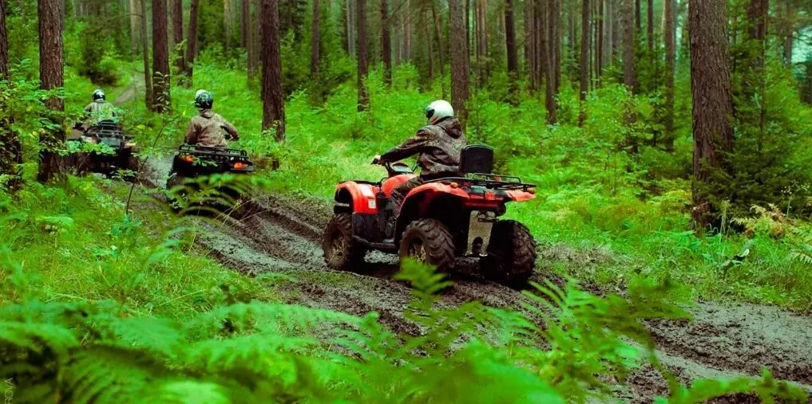
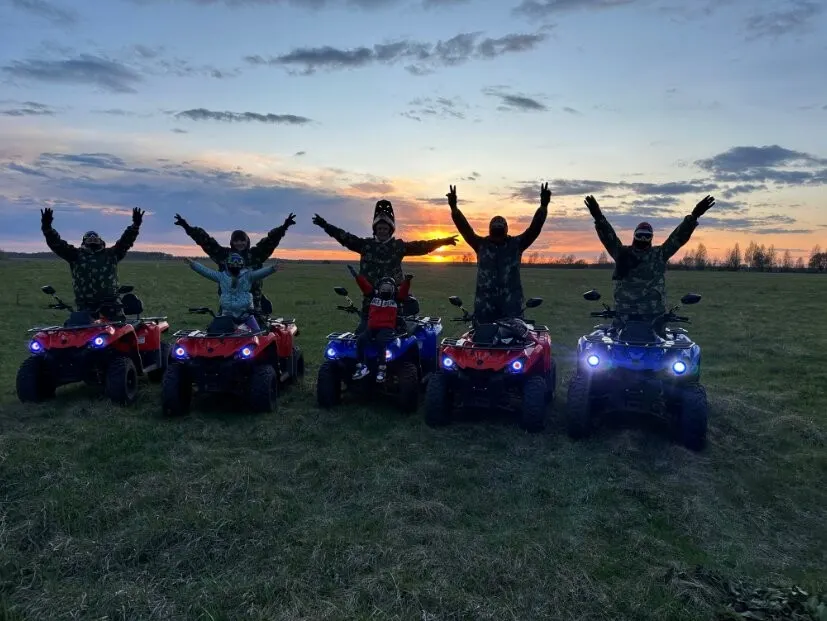
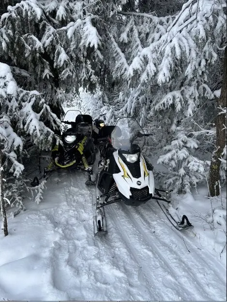
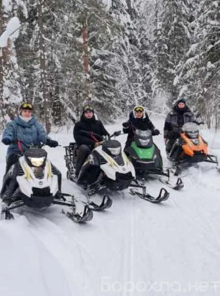

Прогулки и экстрим · Пермь
Вне Города: экскурсии и поездки из Перми
Маршруты, даты и цены. Заявка - в одном сообщении.
- Запись одним сообщением
- Ждём: ежедневно, 09:00–20:00
- 4,6 и 9 отзывов на Яндекс.Картах

Направления и цены
Стоимость назовёт администратор при записи.
Что можно выбрать
- Прогулка на квадроциклахв отзывах: лесной маршрут и бездорожьеуточнить
- Прогулка на снегоходахна фото карточки: зимние прогулкиуточнить
- Прогулка с фотосессиейв отзыве: инструктор делает фотоуточнить
- Прокатрубрика карточки: пункт прокатауточнить
Как записаться
- 01
Пишете нам
Выберите направление, дату и время в форме ниже или напишите в мессенджер.
- 02
Уточняем детали
Администратор подтверждает время и отвечает на вопросы.
- 03
Приходите
Адрес: Пермь, улица Гремячий Лог, 2А.



Что пишут гости
Надёжно и безопасно
В отзыве: надёжно, безопасно, безумно красиво.
Инструктор в команде
В отзывах: инструктор сопровождает прогулку и делает фото.
Красивый лес
Гости пишут про маршрут по Пермскому лесу.
Отзывы с Яндекс.Карт
«Все очень понравилось, спасибо большое Евгению за отличную прогулку и фотосессию. Все было замечательно, обязательно вернёмся 👍»
Анна Якимова · 6 июня
«Супер покатались всей семьёй. Огромная благодарность организаторам. Было надёжно, безопасно, безумно красиво и не очень грязно))»
Евгений Буяновер · 6 мая
«Отличная прогулка по красивому Пермскому лесу, спасибо за незабываемые эмоции!»
никита никитич · 26 апреля
Отзывы с карточки на Яндекс.Картах.
Частые вопросы
Как записаться?
Выберите направление, день и время в форме на странице или напишите в мессенджер. Администратор подтвердит запись.
Где вы находитесь?
Пермь, улица Гремячий Лог, 2А. ежедневно, 09:00–20:00.
Сколько это стоит?
Стоимость назовёт администратор при записи. Актуальные цены уточняйте у него.
Запишитесь - ответим в течение дня
- Адрес
- Пермь, улица Гремячий Лог, 2А, Пермь
- Часы
- ежедневно, 09:00–20:00
- Телефон
- +7 (992) 206-66-99